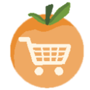
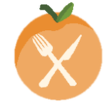
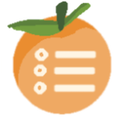

Capture image
Pick a date
Apricots
Avocado
Mango
Pineapple
Rhubarb
Strawberries
Artichoke
Asparagus
Carrots
Celeriac
Chives
Collards
Fava Beans
Fennel
Fiddlehead Ferns
Morels
Mustard Greens
Blackberries
Blueberries
Nectarines
Peaches
Plums
Raspberries
Tomatoes
Watermelon
Broccoli
Cucumber
Green Beans
Zucchini
Apples
Cranberries
Figs
Grapes
Pears
Pomegranate
Quince
Butternut Squash
Cauliflower
Garlic
Ginger
Mushrooms
Potatoes
Pumpkin
Sweet Potatoes
Swiss Chard
Chestnuts
Grapefruit
Lemons
Oranges
Tangerines
Kale
Leeks
Radicchio
Radishes
Rutabaga
Turnips
Description
Save Image